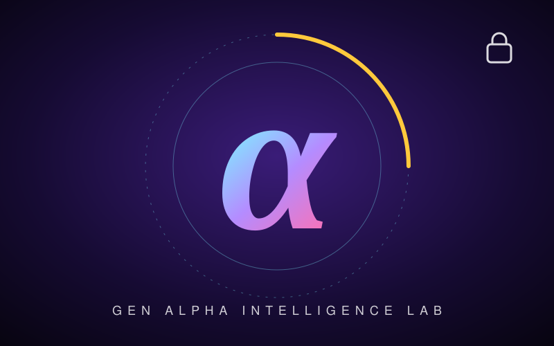

The Curious & Creative Company
Curious & Creative Strategy.
Strategy and consulting for brands, campaigns, and teams, built AI-native from the start. We find the problem worth solving, back it with evidence, and help you decide what to do next.
Start a conversationWhat we doResearch we build
What we work on
- Research, data, and polling
- Forecasting and cultural trends
- Audience strategy
- Campaign strategy
- Podcast and AI strategy
What we do
Bring us the need. Each one has a clear answer and a clear deliverable.
Research & Polling
- You need
- To know what people actually think, not what you hope they think.
- We do
- Custom data pulls, surveys, and polling, read with a journalist's skepticism.
- You get
- The findings, the method behind them, and what they mean for your decision.
Forecasting
- You need
- To see what is coming before you commit budget to it.
- We do
- Trend and cultural forecasting, built on signals we can show you.
- You get
- A forecast, the evidence for it, and the openings worth acting on.
Audience Strategy
- You need
- To reach a specific group of people and actually land with them.
- We do
- Work out who they are, where they spend attention, and what earns it.
- You get
- An audience map and a plan for reaching them.
Campaign Strategy
- You need
- To shape a campaign, or fix one that isn't working.
- We do
- Find the insight, sharpen the idea, and plan how it reaches people.
- You get
- A strategy, a brief your team can run with, and how to measure it.
Podcast Strategy
- You need
- To start a podcast, or give a show that lost direction a reason to exist.
- We do
- Shape the concept, the format, and how it ties to your marketing.
- You get
- A show concept, a first-episode outline, and a production plan.
AI Workflow Strategy
- You need
- To know where AI helps your team, and what not to hand over.
- We do
- Map your workflow and design AI that amplifies your team's judgment.
- You get
- A ranked list of where AI helps, the tools, and first steps.

Research we build
Gen Alpha Intelligence Lab
Our own research on the next generation of audiences, built as an interactive lab instead of a slide deck. It shows how we work: ask a sharp question, gather the evidence, and make the answer usable. We can build one around your audience, category, or question.
Enter the Lab password requiredAsk us to build one
How we work
- SprintOne question, a few weeks, a clear answer.
- ProjectA campaign or launch, from insight to brief to plan.
- OngoingA set monthly block of strategy for founders and lean teams.
Our founders' agency experience
- Levi's
- Gatorade

- DIRECTV
- Sephora